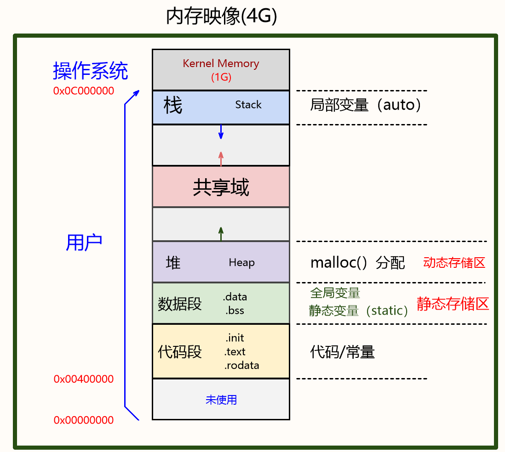

<!DOCTYPE lake>
<h1 data-lake-id="khg7b" id="khg7b"><span data-lake-id="u69a4b238" id="u69a4b238">1&gt; 数据类型</span></h1><a class="yuque-card-link" href="https://cdn.nlark.com/yuque/0/2024/jpeg/43021193/1728296871504-24ce6070-fe1d-40fb-8944-0fe67426067c.jpeg" rel="noopener noreferrer" target="_blank">board：board</a><p data-lake-id="u372ea4f9" id="u372ea4f9"><br/></p><h1 data-lake-id="SLrwW" id="SLrwW"><span data-lake-id="u23491f20" id="u23491f20">2&gt; 变量与常量</span></h1><a class="yuque-card-link" href="https://cdn.nlark.com/yuque/0/2024/jpeg/43021193/1730621004264-30edcd90-105a-49e4-bf2f-ff3e5b762c42.jpeg" rel="noopener noreferrer" target="_blank">board：board</a><p data-lake-id="ueb21af2c" id="ueb21af2c"><br/></p><h1 data-lake-id="h2g5S" id="h2g5S"><span data-lake-id="ue4b083fd" id="ue4b083fd">3&gt; 变量与函数的属性</span></h1><p data-lake-id="u0cbd53e2" id="u0cbd53e2"><br/></p><a class="yuque-card-link" href="https://cdn.nlark.com/yuque/0/2024/jpeg/43021193/1728532227451-64b59f17-b348-490c-90fe-89e1f1d6f31e.jpeg" rel="noopener noreferrer" target="_blank">board：board</a><p data-lake-id="u38abd66c" id="u38abd66c"><br/></p><p data-lake-id="ua9d530f2" id="ua9d530f2"></p><p data-lake-id="ubbb098d9" id="ubbb098d9"><br/></p><p data-lake-id="ua1dcc138" id="ua1dcc138"><br/></p><p data-lake-id="ub4052540" id="ub4052540"><br/></p>